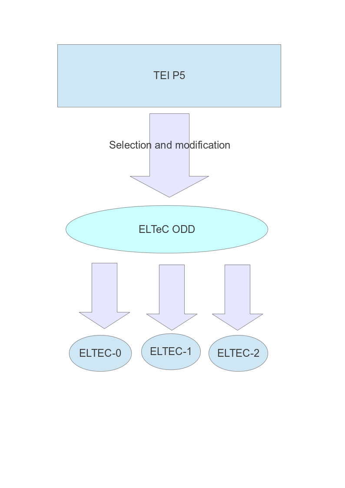
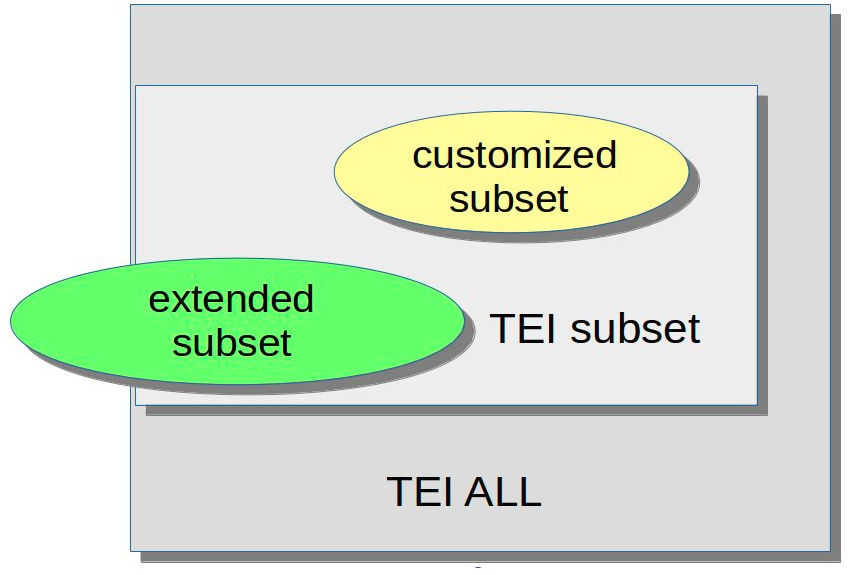

![[Put logo here]](media/logo.jpg)
ODD : Attendez, ce n’est pas tout !
ODD : Attendez ce n’est pas tout !
- ODD comme système de documentation
- Définir des contraintes supplémentaires : utilisation de schematron
- Enchaînement et combinaison d’ODDs
- Documenter les intentions : le Processing Model
- Qu’est-ce qu’être conforme à la TEI ?
ODD comme système de documentation
ODD est un langage conçu pour faciliter la documentation systématique. Il fournit donc des balises spécialisées pour distinguer :
- <code> : un morceau de code exprimé dans n’importe quel langage formel
<code lang="C">count += 56;</code>
- <att> : un nom d’attribut
The
<att scheme="TEI">target</att> attribute indicates a URI
- <gi> : un nom d’élément
The
<gi>table</gi> element is for...
ODD comme système de documentation (suite)
- <ident> : identifiant ou nom d’un objet en n’importe quel langage formel
The <ident type="class">model.biblLike</ident> class
- <val> : valeur d’attribut
Cet attribut porte la valeur <val>unknown</val>
- <tag> : balise XML
<tag>ptr target="http://www.bbc.co.uk"/</tag>
Structuration d’un ODD
Mis à part le <schemaSpec> qui définit le schéma, on peut organiser le document comme tout autre document TEI, utilisant <div>, <list>, etc.
Au sein de ce document, des éléments supplémentaires sont prévus pour le regroupement des déclarations à l’extérieur du <schemaSpec> :
Un exemple très simple…
Ouvrir le fichier tei_bare.odd avec oXygen
Retrouvez l’élément <schemaSpec>
Examiner la structuration du fichier (utiliser la perspective Outline/Sommaire de oXygen)
Un exemple plus ambitieux…
Ouvrir le fichier tei_simplePrint.odd avec oXygen
Retrouvez l'élément <schemaSpec>
Examiner la structuration du fichier (utiliser la perspective Outline/Sommaire de oXygen)
Contraintes de données avec Schematron
- Une spécification d’élément peut proposer des contraintes supplémentaires sur son contenu en utilisant un ou plusieurs éléments <constraintSpec>
- Ces règles sont exprimées (typiquement) en utilisant le langage ISO Schematron
<elementSpec ident="div"
module="teistructure" mode="change"
xmlns:s="http://purl.oclc.org/dsdl/schematron">
<constraintSpec ident="div"
scheme="isoschematron">
<constraint>
<s:assert test="@type='prose' and .//tei:p">une division prosaïque doit contenir
au moins un paragraphe</s:assert>
</constraint>
</constraintSpec>
</elementSpec>
L’élément <constraintSpec>
Il définit une contrainte qui s’applique au sein de l’élément dans lequel il est déclaré
- L’attribut ident est obligatoire : il fournit un identifiant unique
- Il rassemble un ou plusieurs <constraint>
- L’élément <constraint> contient (typiquement) un <assert> ou un <report>, éléments de l’espace de nommage
http://purl.oclc.org/dsdl/schematron
Fonctionnement des règles Schematron
- Le contenu de l’élément <assert> est affiché si le test est false
- Le contenu de l’élément <report> est affiché si le test est true
- Astuce : plusieurs éléments schematron sont disponibles pour enrichir le texte du message affiché, notamment <name> (context) et <value-of> (valeur)
Un schéma RNG intégrant ces règles sera auto-généré si l’on utilise le logiciel oXygen pour traiter son ODD
Applications typiques des règles Schematron
- Contraintes de co-occurrence : ‘si l’attribut X a la valeur A, l’élément qui le porte doit contenir un Y’
- Contraintes arithmétique contextuelles : ‘au sein d’un <titleStmt>, on ne permet qu’un seul <title>’
- Contraintes textuelles : ‘Les caractères ' et “ ne sont pas permis au sein d’un <p> apparaissant dans le <body>’
- Contraintes contextuelles : ‘mots en français (xml:lang='fr') ne sont pas permis au sein d’un élément latin (xml:lang='la')’
- Intégrité référentielle : ‘un pointer exprimé sous la forme d’une URL et commençant par # doit correspondre à un élément ayant un xml:id identique quelque part dans le document’
Par exemple…
<constraintSpec ident="isoconstraint"
xmlns:s="http://purl.oclc.org/dsdl/schematron">
<constraint>
<s:assert test="tei:fileDesc/tei:titleStmt/tei:title[@type='main']">
il faut fournir un titre principal </s:assert>
</constraint>
</constraintSpec>
<elementSpec ident="figure"
xmlns:s="http://purl.oclc.org/dsdl/schematron">
<constraintSpec ident="demo-c2">
<constraint>
<s:report test="not(tei:figDesc or tei:head)"> Votre figure
ne contient ni un figDesc ni un head : aucun attribut
<att>alt</att> n'est générable</s:report>
</constraint>
</constraintSpec>
</elementSpec>
Un schematron plus complexe
<constraintSpec ident="validtarget">
<constraint>
<s:rule context="tei:*[@target]">
<s:let name="results"
value="for $t in tokenize(normalize-space(@target),'\s+') return starts-with($t,'#')
and not(id(substring($t,2)))"/>
<s:report test="some $x in $results satisfies $x"> Erreur: Chaque pointer dans
"<s:value-of select="@target"/>" doit indiquer un ID dans ce même document
(<s:value-of select="$results"/>)</s:report>
</s:rule>
</constraint>
</constraintSpec>
normalize-space(@target) : supprimer les blancs non-signifiantstokenize(normalize-space(@target),'\s+') : couper la valeur de l’attribut dans des tokens séparés par des blancsstarts-with($t,'#') : ne considérer que les pointeurs locauxnot(id(substring($t,2))): y-a-t il un attribut xml:id dont la valeur correspond à la valeur indiquée en sélectionnant ce qui suit son 2ème caractèresome $x in $results satisfies $x : expression XPath permettant la validation d’une séquence de valeurs booléennes (vraies/fausses)
Combien d'ODD faut-il dans un projet?

Usage de l’attribut source
L’attribut source sert à spécifier la source des déclarations qu’on souhaite intégrer : par défaut dans la version la plus récente de TEI P5.
Ou bien…
<schemaSpec ident="test2" prefix="tei_"
start="TEI" source="tei:1.5.0">
</schemaSpec>
<schemaSpec ident="test3" prefix="tei_"
start="TEI"
source="https://www.tei-c.org/Vault/P5/1.5.0/xml/tei/odd/p5subset.xml">
</schemaSpec>
<schemaSpec ident="test4"
source="myCompiled.odd">
</schemaSpec>
source peut être utilisé sur <classRef>, <elementRef>, <macroRef>, et <moduleRef> : il doit pointer vers un ODD compilé
Compilation d'un ODD
- Transformer le fichier tei_bare.odd en ‘ODD compilé’ avec oXygen en utilisant la feuille de style ${frameworks}/tei/xml/tei/stylesheet/odds/odd2odd.xsl
- Regardez rapidement la sortie en profitant de l’affichage ‘Outline’
- Tous ces <classSpec> et <dataSpec> sont fournis par le module tei : ils sont constitutifs de l’infrastructure TEI.
- Enregistrez cette version sous le nom tei_bare.compiled.odd
Usage d’un ODD compilé
Nous allons réutiliser TEI_bare, mais nous souhaitons supprimer l’élément <head>
<schemaSpec ident="Bare-minus"
source="tei_bare.compiled.odd" start="TEI">
<moduleRef key="tei"/>
<moduleRef key="header"/>
<moduleRef key="core" except="head"/>
<moduleRef key="textstructure"/>
</schemaSpec>
Notez qu’on ne peut supprimer ou modifier que les choses qui sont déjà présentes dans l’ODD compilé spécifié par l’attribut source.
Chaînage : super-ensemble
Nous allons réutiliser TEI_bare, mais nous souhaitons ajouter le module gaiji
<schemaSpec ident="Bare-plus"
source="tei_bare.compiled.odd" start="TEI">
<moduleRef key="tei"/>
<moduleRef key="header"/>
<moduleRef key="gaiji"
source="http://www.tei-c.org/release/xml/tei/odd/p5subset.xml"/>
<moduleRef key="textstructure"/>
</schemaSpec>
Le <moduleRef> qui va fournir le module gaiji utilise son propre attribut source pour spécifier où aller cherche les déclarations de ce module.
Rétablir un élément supprimé
Nous allons ramener l'élément <q> qui a été effacé du schéma compilé :
<schemaSpec ident="Bare-plus"
source="tei_bare.compiled.odd" start="TEI">
<moduleRef key="tei"/>
<moduleRef key="header"/>
<elementRef key="q" source="tei:3.0.0"/>
<moduleRef key="textstructure"/>
</schemaSpec>
Addition des composants d’une schéma nonTEI
On souhaite utiliser l’élément TEI <formula> et y insérer du contenu exprimé en MathML
Il nous faut donc :
- inclure les composants du schéma MathML
- modifier le modèle de contenu de l’élément <formula>
- générer un schéma qui résout les conflits de nommage
ATTENTION : il y a un élément <list> dans TEI mais également dans MathML !
TEI + MathML : le ODD
<schemaSpec ident="tei_math" prefix="tei_"
start="TEI teiCorpus">
<moduleRef url="http://www.tei-c.org/release/xml/tei/custom/schema/relaxng/mathml2-main.rng"/>
<moduleRef key="header"/>
<moduleRef key="core"/>
<moduleRef key="tei"/>
<moduleRef key="textstructure"/>
<moduleRef key="figures"/>
<elementSpec module="figures"
ident="formula" mode="change">
<content>
<elementRef key="mathml.math"/>
</content>
</elementSpec>
</schemaSpec>
L’attribut prefix nous permet de désambiguïser les identifiants ressortant des schémas différentes
TEI + MathML : le document
<p>The relevant inequalities and distributions are <formula notation="MathML">
<m:math overflow="scroll">
<m:mn>0</m:mn>
<m:mo>.</m:mo>
<m:mn>0</m:mn>
<m:mn>1</m:mn>
<m:mo><</m:mo>
<m:mi>κ</m:mi>
<m:mo><</m:mo>
<m:mn>1</m:mn>
<m:mn>0</m:mn>
</m:math>
</formula>, Vavilov distribution, and ... </p>
Ajout d’un ‘processing model’(modèle de traitement)
Vous pouvez également enrichir votre documentation avec des déclarations plus précises sur la manière dont des éléments particuliers devraient être mis en forme.
Cela est complémentaire aux fonctionnalités offertes avec rend et style qui décrivent la manière dont la source originale (non-digitale) a été formattée.
Les nouveaux éléments <model>, <modelGrp>, <param>, <outputRendition>
Le concept de behaviour est introduit pour définir des concepts de formattage employés communément, par exemple, ‘block’, ‘inline’, ‘pointer’, etc.
<elementSpec mode="change" ident="quote">
<model predicate="ancestor::p"
behaviour="inline"/>
<model predicate="not(ancestor::p)"
behaviour="block"/>
</elementSpec>
Process a <quote> inside a <p> as an inline; elsewhere as a block
Behaviours : quelques exemples
| behaviour | params | function |
|---|
| alternate | (default, alternate) | supporte la présentation de visualisations alternatives, par exemple en rendant le contenu préféré, en le présentant en parallèle, ou en bien en permettant de passer de l’un à l’autre. |
| graphic | (url, width, height, scale, title) | si url est présent, l’utiliser pour rendre l’élément graphic, sinon rendre une image placeholder. |
| omit | | ne rien faire, ne pas traiter les enfants |
| inline | (content, label | créer un élément inline | | |
Variétés de ODD

- Chacune de ces formes représente :
- un ODD
- le schéma généré à partir de cet ODD
- l'ensemble de documents considérés comme valide par ce schéma
- un ‘TEI subset’ fournit un sous-ensemble des composants constituant TEI All
- un ‘customised subset’ est également un sous-ensemble avec des personnalisations supplémentaires
- un ‘extended subset’ contient des composants qui ne font pas partie de TEI All
Le plus simple
- Vos modifications génèrent un schéma réduit, plus précis, plus adapté à votre projet et une documentation plus exacte et correcte pour votre communauté d'utilisateurs
- Mais vos documents restent toujours valides par rapport à TEI All et vous respectez toujours le modèle sémantique de la TEI.
- Les extensions éventuelles sont signalées clairement, en utilisant une autre espace de nommage, et sont d’ailleurs expliquées dans votre ODD
Qu’est-ce signifie « être conforme à la TEI » ?
- être honnête : Les éléments XML qui sont déclarés comme appartenant au namespace TEI doivent respecter les définitions TEI de ces éléments
- être explicite : Pour valider un document TEI, un ODD est fortement conseillé, parce que cela mettra en évidence toutes les modifications effectuées.
Plus formellement, pour un document TEI conforme :
- il doit être un document XML bien-formé
- si la construction de son schéma ne prend en compte que les éléments appartenant à l’espace de nommage TEI, l'ensemble de documents considéré comme valide par ce schéma devrait être un sous-ensemble de l'ensemble de documents considéré valide par le schéma TEI-ALL.
- Tout autre élément présent doit appartenir à un autre namespace
L’objet de ces règles est de simplifier le ‘blind interchange’ des documents ; elles ne le garantissent pas.
Les limites de la modification
- Est-ce que l’on peut supprimer n’importe quoi ? par ex. <title> ?
- A quoi servent les classes vides ?
- Est-ce qu’on peut ajouter n’importe quoi ? quelles limitations ?
L’enjeu c’est de permettre à une autre personne de comprendre votre encodage, non pas forcément de la contraindre à vous suivre aveuglement !
Lectures supplementaires...
- https://lb42.github.io/W/howtoChain.html
- https://lb42.github.io/W/conformance.html